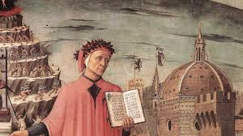

Dante Alighieri

Major Works
The Divine Comedy (1320)
—--- Inferno
—--- Purgatorio
—--- Paradiso
Other Works
La Vita Nuova (The New Life) (1294)
De Monarchia (On Monarchy) (c. 1313)
Convivio (The Banquet) (c. 1304–1307)
De Vulgari Eloquentia (On Eloquence in the Vernacular) (c. 1302–1305)
Eclogues (Latin pastoral poems, written late in life)